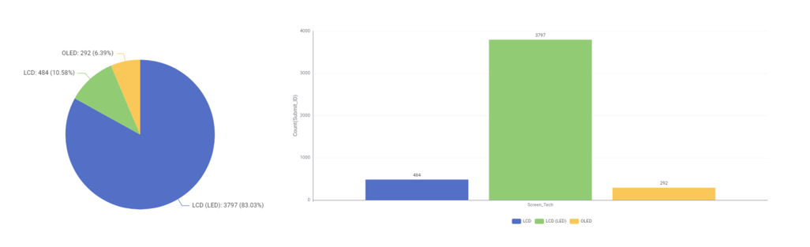
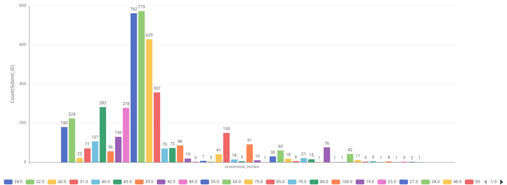
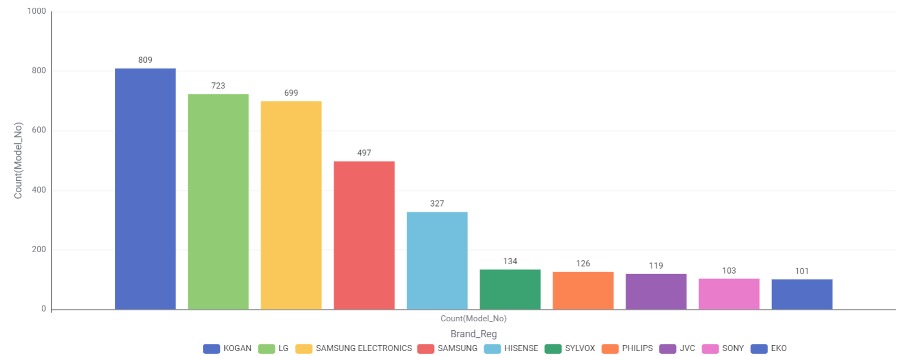
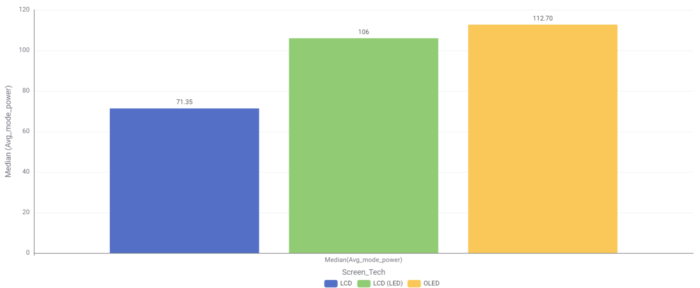
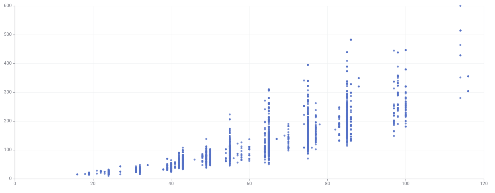
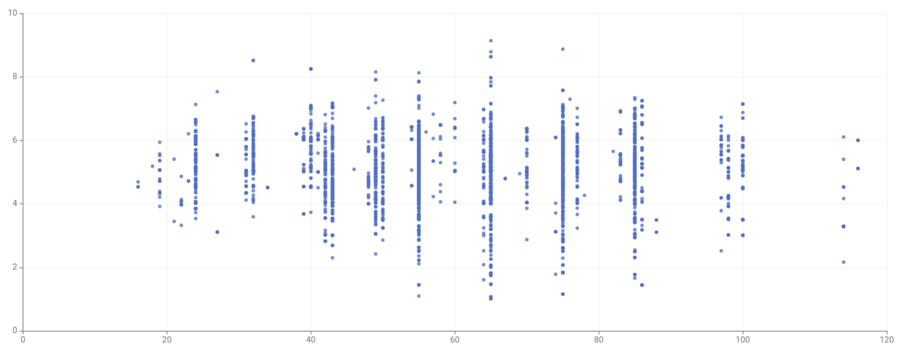
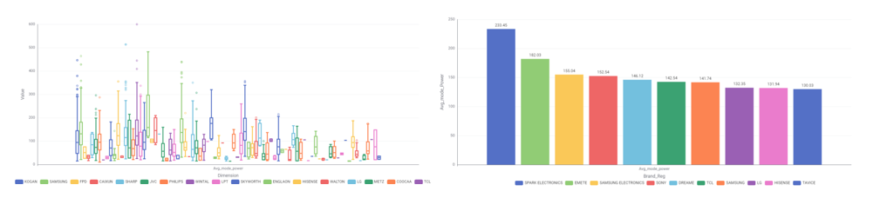

Appliance energy · Australia
What does it really cost
to keep your home running?
Voltra digs into the energy use of Australia's household appliances, starting with televisions. Drawing on a dataset of 4,573 registered TVs, it shows which screens, sizes and brands quietly drive up power use, and which barely register.
See the television breakdownAbout this project
Voltra looks at how much power televisions in the Australian market use. The dataset was cleaned and processed in a KNIME workflow, then explored through charts on the Televisions page, covering screen technologies, sizes, brands, power draw, energy ratings, and how they relate to each other.
Category
Televisions
A modern TV's running cost depends on its screen size, the panel technology, how many hours it's on, and how much power it draws in standby. Bigger and brighter usually means more kilowatt-hours over a year.
Reading the Energy Rating label
Australian TVs carry an Energy Rating label. More stars means the model uses less energy for its size, and the label lists an estimated annual energy use in kilowatt-hours (kWh). Comparing the kWh figure between two TVs of the same size is the quickest way to spot the cheaper one to run.
Data exploration
Six questions (plus a bonus) about Australia's TV market, each answered with a chart built from the TV registration dataset. Tap any chart to open it full size.
1. What TV screen technologies are available in Australia, and which are the most frequent?

LCD (LED) dominates the market at about 83% of registered TVs (3,797 models).
Plain LCD makes up around 10.6% (484) and OLED just 6.4% (292). LED-backlit panels are cheaper and cover every price range, so they've become the default, while OLED stays a premium niche.
2. What screen sizes are available, and which are the most frequent?

Mid-to-large screens lead, with 65" the most common (773), just ahead of 55" (762).
75" (629) and 85" (357) follow, while small sizes like 24", 32" and 43" are far rarer. Large screens have become the standard living-room choice.
3. Which brands have the greatest number of different models?

KOGAN offers the most models (809), ahead of LG (723) and Samsung Electronics (699).
A few big brands hold most of the models while many others list only a handful, so the market is quite top-heavy.
4. Which screen technology consumes the least power?

Plain LCD draws the least power, a median of 71.35 W.
LCD (LED) sits at 106 W and OLED is highest at 112.70 W. OLED lights each pixel individually, so it tends to use more energy than a simpler LCD panel.
5. What is the relationship between screen size and power use?

Bigger screens use more power, a strong, positive relationship.
The points rise steadily from bottom-left to top-right and stay fairly tight around that trend. A larger screen has more area to light up, so it naturally needs more energy.
6. What is the relationship between star rating and screen size?

There's little to no relationship, size barely affects efficiency.
Ratings stay scattered from low to high across every size, so efficiency comes down to the panel and design rather than how big the screen is.
7. Bonus Are there differences in power consumption between brands?

Yes, power use varies widely, with Spark Electronics highest at about 233 W.
EMETE (182 W), Samsung Electronics (155 W), Sony (153 W) and Dreame (146 W) follow. The top brands draw more than double what many others use, mostly because they focus on larger, high-end screens.
The big picture
Screen size is the biggest driver of a TV's power use, not its brand or star rating.
Australia's market runs on large LCD (LED) screens, and power climbs with size while the star rating barely does. So to keep running costs down, watch the screen size first, then check the actual power rating.
Work out your TV's running cost
Pick your TV (or enter its wattage from the Energy Rating label), set your daily viewing hours, and adjust the electricity rate to match your bill.
Estimates only. Uses typical wattages and your chosen viewing hours, so results may differ from the table above.
About
About Voltra
Voltra is a student project exploring household appliance energy consumption in the Australian market. It pairs plain-language explanations with a simple calculator so anyone can estimate their own running costs.
What we're doing
We gather appliance energy figures and turn them into plain-language guidance and an interactive calculator. The goal is to make energy use easy to understand for everyday households, not just spec-sheet readers.
The data
The charts come from a real dataset of registered Australian TVs, cleaned and processed in a KNIME workflow. The calculator uses typical TV wattages so you can estimate your own running cost against an electricity rate you set.
Use of Generative AI
Generative AI (Claude) was used to help scaffold this website's HTML, CSS and JavaScript
and to draft the site copy. All generated code was reviewed and is understood by the
author. Details are recorded in the project's README.md.